기존 직업 29종 통짜 시트 — 마무리 결과
관절 지정 애니(PixelLab) + 새 디자인(3등신, 키 46px). 점수는 도트 검수 에이전트(합격선 전 항목 3+, 평균 3.5). season6 브랜치 기준, main 미배포.
게임에서 보기: 스킬 시험장 (직업 버튼 → 평타만/스킬, 속도 ×0.25) · 예전 그림 비교는 주소 끝 ?sheets=0 · 아직 꺼진 새 직업 미리 켜 보기: ?sheetsOn=…
검사 계열 + 견습

견습 기사 · 새로 완성 · 켤지 승인 필요
평타·시전 3.43~3.57 (합격선 바로 아래), 걷기 임시

검사 · 켜짐
평타 3.71·시전 3.86·걷기 3.86
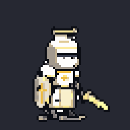
성기사 · 켜짐
평타 3.86·시전 3.86, 걷기 임시

검성 · 켜짐
평타 4.0·시전 4.0·걷기 3.86

대검전사 · 켜짐
평타 3.71·시전 3.57·걷기 3.86

성좌기사 · 새로 완성 · 켤지 승인 필요
디자인 4.14·시전 3.71, 평타 짧은 판(5f), 걷기 임시
그림 없음
검신 · 미달 · 예전 그림
디자인 7라운드 미달 — 예전 그림 유지

파천검왕 · 새로 완성 · 켤지 승인 필요
디자인 3.71, 평타 3.43(미달)·시전 짧은 판, 걷기 임시
창기사 계열
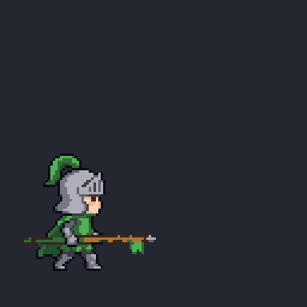
창기사 · 켜짐
3.71
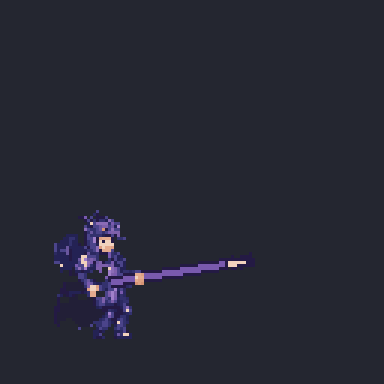
용기병 · 켜짐
3.57
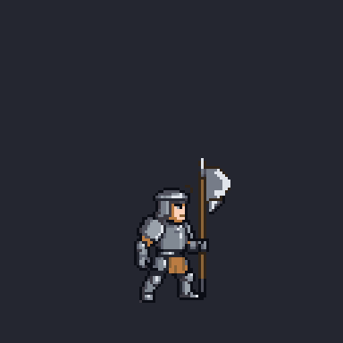
할버디어 · 미달 · 예전 그림
평타 미달 — 예전 그림 유지
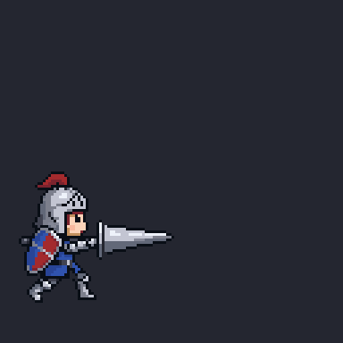
랜서 · 켜짐
3.71
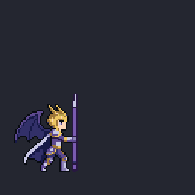
용황 · 새로 완성 · 켤지 승인 필요
디자인 4.14·동작 3.57
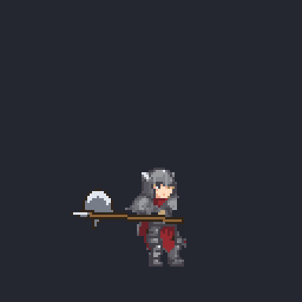
전쟁군주 · 새로 완성 · 켤지 승인 필요
디자인 3.57·동작 3.71
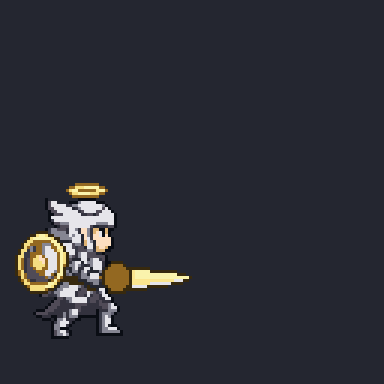
천마장군 · 새로 완성 · 켤지 승인 필요
디자인 4.00·동작 3.71
레인저 계열 (7종 켜짐)
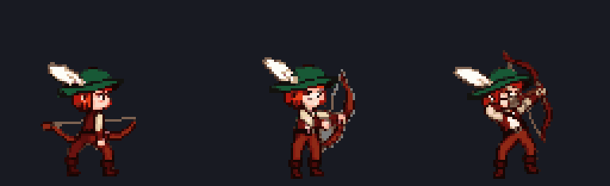
레인저 · 켜짐
3.57~3.86
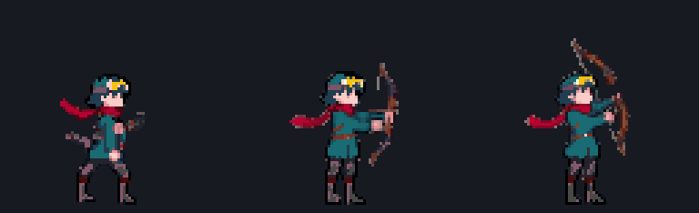
저격수 · 켜짐
3.57~3.71
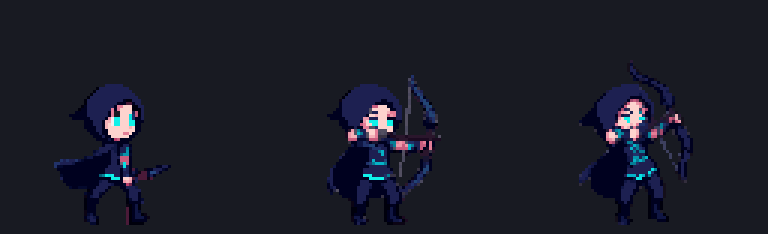
마궁수 · 켜짐
3.57
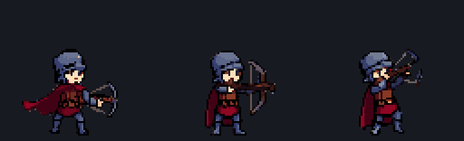
석궁사수 · 켜짐
3.57~3.71 (몸이 3/4 정면)
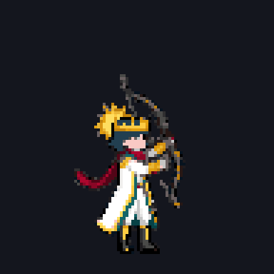
신궁 · 켜짐
3.71~3.86
차원궁사 · 켜짐
3.57~3.71
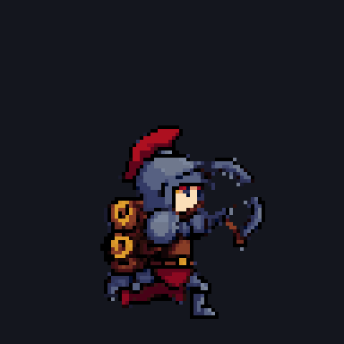
공성포수 · 켜짐
3.57~3.86
마법사 계열 (7종 켜짐)
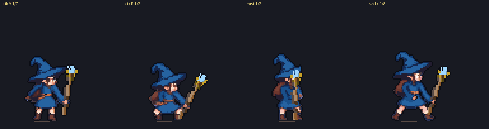
마법사 · 켜짐
3.71 / 3.57
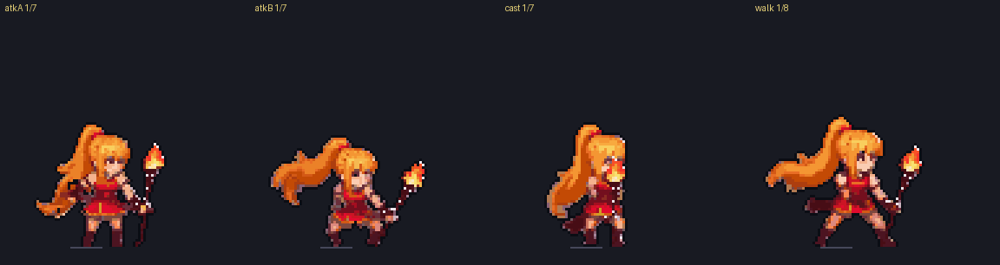
화염술사 · 켜짐
3.71 / 3.57
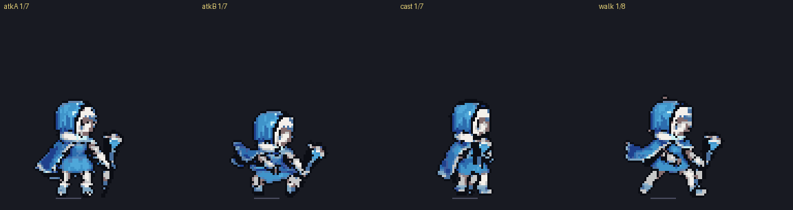
빙결술사 · 켜짐
3.71 / 3.71
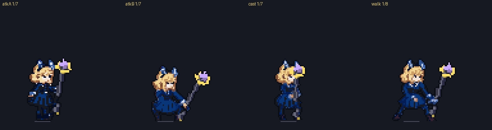
뇌전술사 · 켜짐
3.57 / 3.57
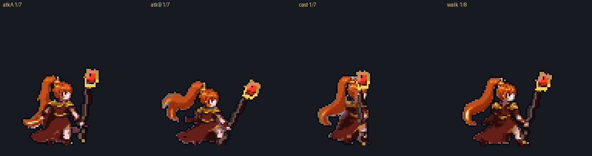
대마도사 · 켜짐
3.57 / 3.57
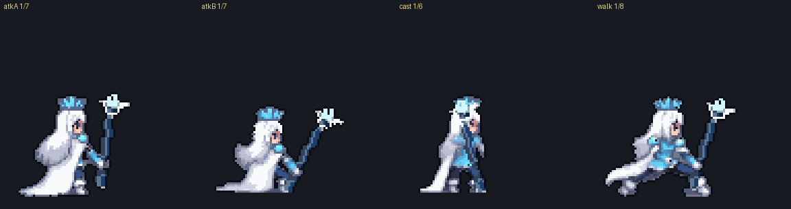
빙결의 군주 · 켜짐
3.57 / 3.29 (걷기 망토가 다리 덮음)
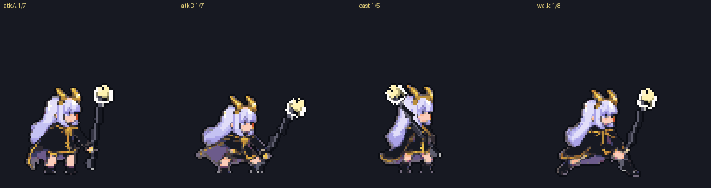
뇌제 · 켜짐
3.57 / 3.57